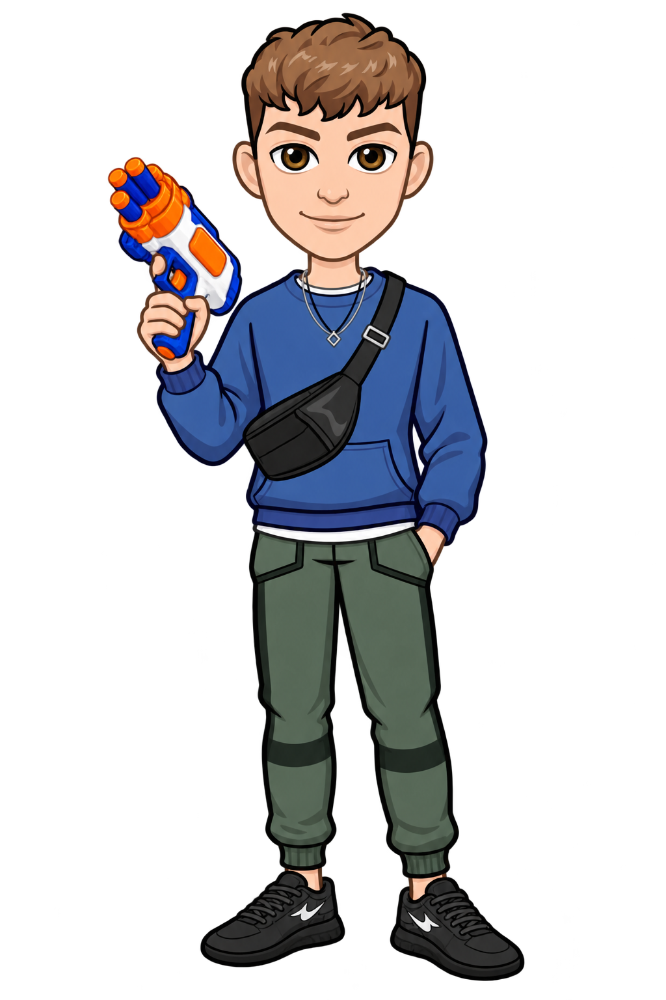
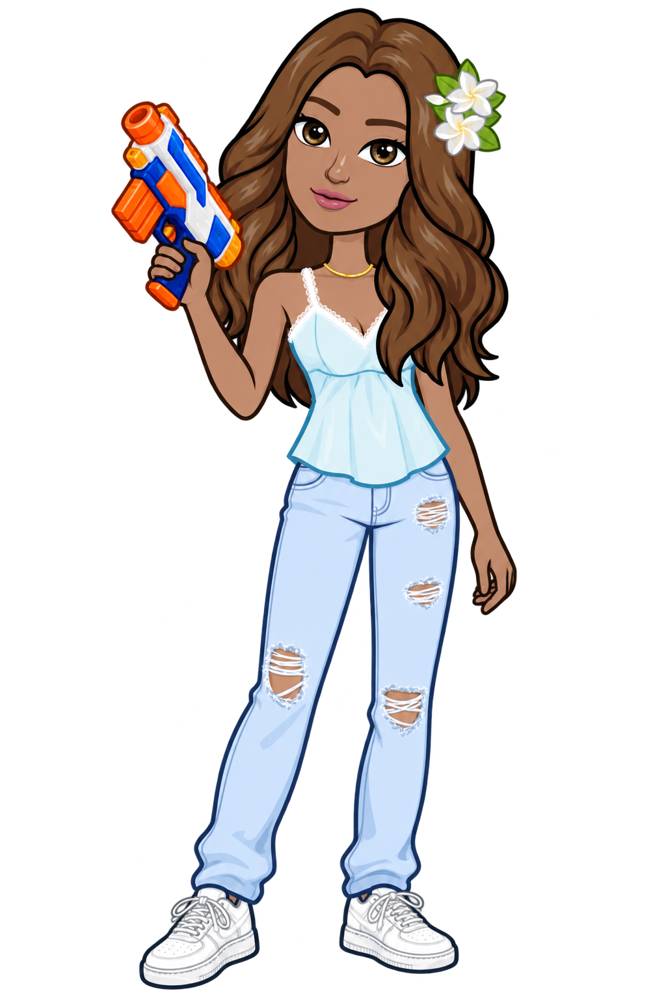
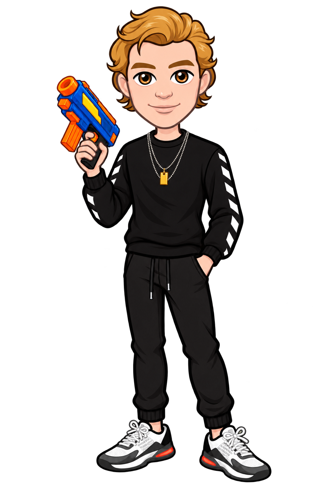

Shoot the balloon with the correct answer to earn 100 points.Hit a wrong answer and lose a life. You have 3 lives!
Computer: Arrow keys to aim • Spacebar to firePhone / tablet: Arrow buttons to aim • FIRE to shootYou can also drag the crosshair on the game area.



Ready when you are.
Choose a shooter to begin.